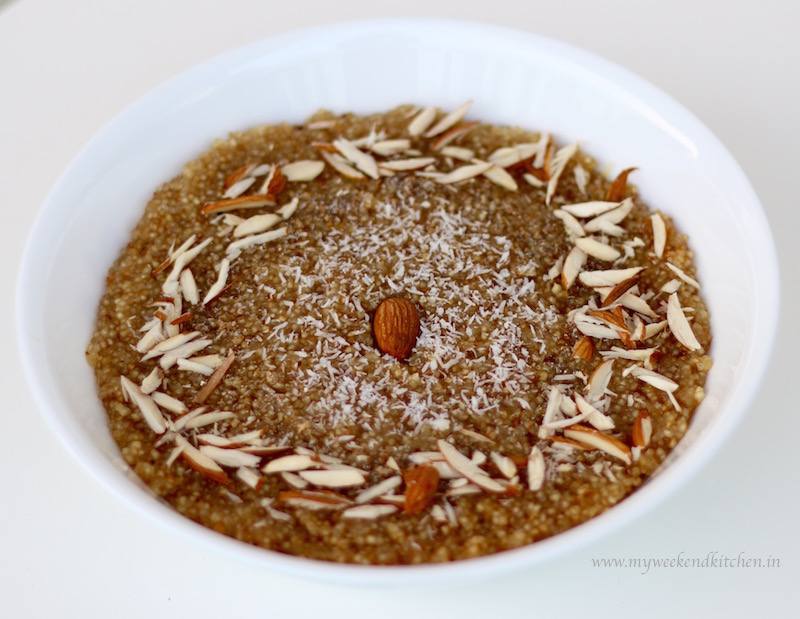

Laapsi or lapsi is an Indian sweet dish which has a lot of variants and is made using grain flour or broken wheat and ghee, along with milk, nuts, raisins and other dried fruits. Lapsi is commonly prepared during Hindu ceremonies, and is served as a religious offering to Devtas.[1] Lapsi forms an integral part of North Indian cuisine.
Ingedients
- 2 cup broken wheat
- 10 almonds
- 4 cup water
- 1 tablespoon powdered green cardamom
- 20 raisins
- 1 1/4 cup ghee
- 1 cup sugar
- 10 cashews
Steps
- Heat ghee in a non-stick pan. Add broken wheat and sauté for 5 minutes or till browned.
- Boil 4 cups water and add this to the pan, cover and cook till the water evaporates.
- Add cardamom powder and fennel seeds and mix well. Add jaggery, mix well and cook for 2-3 minutes or till the jaggery melts.
- Serve warm.